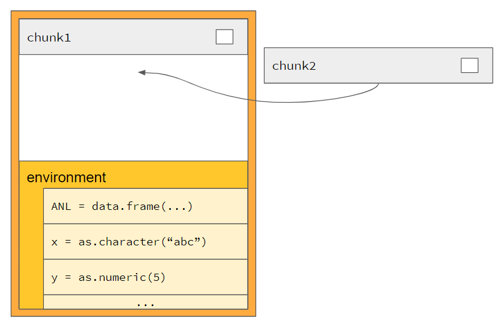

Basic chunks
NEST coreDev
2022-04-22
basic_chunks.RmdThe chunks container
The main concept behind the code chunks is the chunks container. This container consists of two elements:
- A stack of quoted R expressions, each called a “chunk”
- An environment carrying variable values

Each chunk can be evaluated inside the current environment. To
evaluate all chunks inside the same environment, the chunks
R6 object was created in teal.code. We refer to this object
as “chunks container”. It internally has a stack of chunk
objects and the environment where they will get evaluated.
The next sections will explain what a chunk is and how it is evaluated.
What is a chunk?
A quoted R expression is a necessary step to create a
chunk object, which is an R6 object of class
chunk_call. Quoted R expressions can be created in three
different ways:
a <- 3
# Creating a chunk by quote ------------------------------
expr_a <- quote(sum(a, a))
print(expr_a)## sum(a, a)## [1] "call"
# Creating a chunk by bquote ------------------------------
expr_b <- bquote(b <- sum(a, a))
print(expr_b)## b <- sum(a, a)## [1] "<-"
# Creating a chunk by call -------------------------------
expr_c <- call("sum", a, a)
print(expr_c)## sum(3, 3)## [1] "call"To evaluate the expressions of class call or an
assignment given by class <- above, R uses the
eval function. This function evaluates each single
call inside the current environment, in case no other
environment is given. In the example code you can see what happens upon
evaluating the expressions:
a <- 3
expr_a <- quote(sum(a, a))
expr_b <- bquote(b <- a + a)
expr_c <- call("sum", a, a)
eval(expr_a)## [1] 6## [1] 6
eval(expr_c)## [1] 6Now chunk objects can be created and evaluated using the
expressions above as follows:
a <- 3
expr_a <- quote(sum(a, a))
expr_b <- bquote(b <- a + a)
expr_c <- call("sum", a, a)
chunk_1 <- teal.code::chunk$new(expression = expr_a)
chunk_1$eval()## [1] 6## [1] 6
chunk_3 <- teal.code::chunk$new(expression = expr_c)
chunk_3$eval()## [1] 6Note that teal.code::chunk is merely an alias for
teal.code::chunk_call. And so the following code is the
same as the above code:
chunk_1 <- teal.code::chunk_call$new(expression = expr_a)
chunk_1$eval()## [1] 6
chunk_2 <- teal.code::chunk_call$new(expression = expr_b)
chunk_2$eval()
print(b)## [1] 6
chunk_3 <- teal.code::chunk_call$new(expression = expr_c)
chunk_3$eval()## [1] 6Motivation for the chunk (chunk_call) object
A quoted R expression can simply be evaluated with the base function,
eval, as demonstrated above. But additional functionalities
are needed for the chunks container to work. Here are some
additional methods, besides eval, that the
chunk object contains:
# answers the question of whether the code executed without error
chunk_1$is_ok()## [1] TRUE
# answers the question of whether the code has been executed
chunk_1$is_evaluated()## [1] TRUE
# returns error messages, if any, in the form of a string
chunk_err <- teal.code::chunk_call$new(expression = quote(stop("error in chunk")))
chunk_err$get_errors() # no error before evaluation## character(0)
chunk_err$eval()
chunk_err$get_errors()## [1] "error in chunk"Internally, the chunks container will convert quoted R
expressions into chunk objects as they are pushed in.
The next sections will tell in a step by step guide which features
are provided by the chunks container object.
Step by step to understand chunks container
General information
Normally as a module developer the chunks container will be used
within the server function of a shiny/teal module. This
enables storing the chunks container inside the shiny session. For
simplicity reasons this feature will be used in the tutorial. To store a
container inside the shiny session simply use the call
init_chunks() and the chunks R6 object will be
stored in session$userData$<MODULENAME>$chunks. After
using init_chunks(), the functions dealing with chunks
container can be used. Those are recommended. If for any reasons you
want to use your own chunks container, it is possible. Please see the
last section of this article for more information. So for now, we just
call teal.code::init_chunks().
As a simulation of the teal environment the init_session
function is provided:
# pseudo code simulating a shiny session ----------------------------
init_session <- function() {
session <- new.env()
session$userData <- new.env() # nolint
session$ns <- function(x) paste0("x-", x)
return(session)
}
# initializing code chunks -------------------------------------------
session <- init_session()
teal.code::init_chunks(session = session)Feature 1: Reset (initialize the environment)
Normally reproducible code will be used inside a
renderPlot or renderTable call of a shiny
module. For simplicity reasons we just use the pseudo shiny
session defined above in this tutorial. As a first step the chunks
container should be handed over an analysis dataset (anl)
and two variables x = "abc", y = 5. Therefore
you need to use the teal.code::chunks_reset function. It
not only empties all current chunks inside the container, but also hands
over all variables from the current environment to the container
environment.
To check that it worked as expected the function
teal.code::chunks_get_var will be used and check that the
values inside the chunks container are equal to the values from the
environment.
You can use this code snippet:
# Adding variables to the chunks container -------------------------------------
anl <- data.frame(left = c(1, 2, 3), right = c(4, 5, 6))
x <- "abc"
y <- 5
teal.code::chunks_reset()
# Double check variables were handed over-----------------------------
all.equal(x, teal.code::chunks_get_var("x"))## [1] TRUE
Feature 2: Push - adding code snippets
To populate the chunks container, a chunk can be added using the
teal.code::chunks_push function. Here two code snippets
will be added:
teal.code::chunks_push(bquote(y <- y + 1))
teal.code::chunks_push(bquote(x <- paste0(x, y)))
Feature 3: Get R code - showing the chunks container code
To reproduce what was done inside the chunks container, it is
necessary to render the R code inside them. Therefore the chunks
container can display all its code by calling
teal.code::chunks_get_rcode. You can run this example to
see the code:
teal.code::chunks_get_rcode()## chunk_1 chunk_2
## "y <- y + 1" "x <- paste0(x, y)"
Feature 4: eval - evaluating the code
The eval function is responsible to run the code inside
the chunks container. The eval function of a chunks
container is called teal.code::chunks_safe_eval. It
evaluates all chunks inside the container in the order they were pushed.
It is not possible to change the order or run just pieces of the
code.
The teal.code::chunks_safe_eval will always return the
value of the last evaluation. By teal.code::chunks_get_var
it is possible to retrieve specific variables after evaluation.
teal.code::chunks_safe_eval()## [1] "abc6"
teal.code::chunks_get_var("x")## [1] "abc6"
teal.code::chunks_get_var("y")## [1] 6
Feature 5: Is ok - check for errors and warnings
A chunks container object also has its own eval method.
The function teal.code::chunks_safe_eval is merely a
wrapper of this method. It is named "safe_eval" because it
performs an additional step to handle errors by calling another method
of the chunks container object, validate_is_ok. If any
error occurs during the evaluation of expressions pushed into the chunks
container, the error is handled and stored in the chunk
object that contains the expression, and thus no error is thrown to the
calling environment.
The most important function to check if everything went fine is
teal.code::chunks_is_ok. It will return TRUE
in the case where everything was fine.
teal.code::chunks_validate_is_ok returns a useful
validate(need(...)) message inside the shiny app in case
something went wrong.
teal.code::chunks_is_ok()## [1] TRUE
teal.code::chunks_validate_is_ok()
# Trying an error inside a chunk ------------------------
teal.code::chunks_push(quote(stop("ERROR")))
teal.code::chunks_safe_eval()## Error: The following errors(s) occurred:
## ERROR
##
## when evaluating the following code:
## stop("ERROR")
teal.code::chunks_is_ok()## [1] FALSE
teal.code::chunks_validate_is_ok()## Error: The following errors(s) occurred:
## ERROR
##
## when evaluating the following code:
## stop("ERROR")
The use of the teal.code::chunks_safe_eval is extremely
important in a reactive context, such as inside the server function of a
shiny app. Since errors are not thrown to the environment calling the
chunks container, it will not crash the shiny app, which is a good
thing. However, the shiny app will also not know that an error has
occurred. Calling teal.code::chunks_safe_eval instead of
the eval method of the chunks container ensures that a
validation step occurs.
Tutorial Summary
In summary:
- chunks containers host code snippets
- chunks containers host their own environment
- chunks containers are initialized inside shiny/teal using
teal.code::init_chunks - chunks container can be accessed to retrieve variables from the
environment using
teal.code::chunks_get_var - chunks can be added to the chunks container by
teal.code::chunks_push - All chunks inside a container can be executed by
teal.code::chunks_safe_eval -
teal.code::chunks_validate_is_okandteal.code::chunks_is_okallow checking for execution errors
The whole implementation of this tutorial is given in the gif below:

For more information about the implementation of chunks inside of shiny/teal module, please visit the Advanced chunks article.
Please find below the implicit vs. explicit usage of code chunks containers.
Implementation of code chunks containers
There are two ways to initialize the code chunks inside shiny modules:
Using R6 implementation:
session_chunks <- chunks$new().Using
teal.codewrappers:teal.code::init_chunks().
The teal.code functions can be used in both cases:
session <- init_session()
teal.code::init_chunks()
a <- 1
b <- 2
# set a & b in env
teal.code::chunks_reset()
# push to chunks
teal.code::chunks_push(expression = bquote(a <- a + 1))
# eval gives return value
teal.code::chunks_safe_eval()## [1] 2
stopifnot(teal.code::chunks_get_var("a") == 2)
teal.code::chunks_push(expression = bquote(c <- a + b))
teal.code::chunks_safe_eval()## [1] 4
stopifnot(teal.code::chunks_get_var("c") == 4)
teal.code::chunks_push(expression = quote(a + b + c))
stopifnot(teal.code::chunks_safe_eval() == 8)
# create a new chunks object explicitly
chunks2 <- teal.code::chunks$new()
# push into this object
teal.code::chunks_push(bquote(d <- 1), chunks = chunks2)
# push the whole of chunks2 into our main chunks object
teal.code::chunks_push_chunks(chunks2)
# evaluate and get results
teal.code::chunks_safe_eval()## [1] 1
teal.code::chunks_get_var("d")## [1] 1The default chunks object in many
teal.code functions is the chunks object
coupled to the shiny session. But as shown above it is possible to use
other chunk objects with these functions using their
chunks argument. The chunks object is an R6
object and consult the function documentation for details of its
explicit methods.